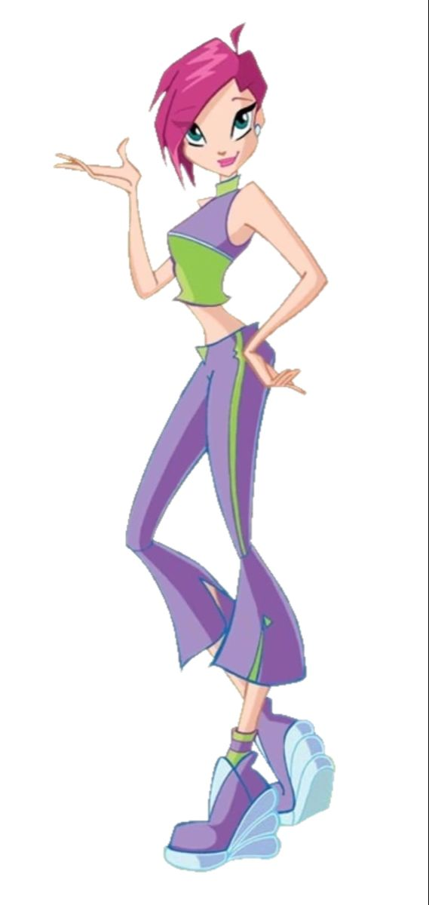
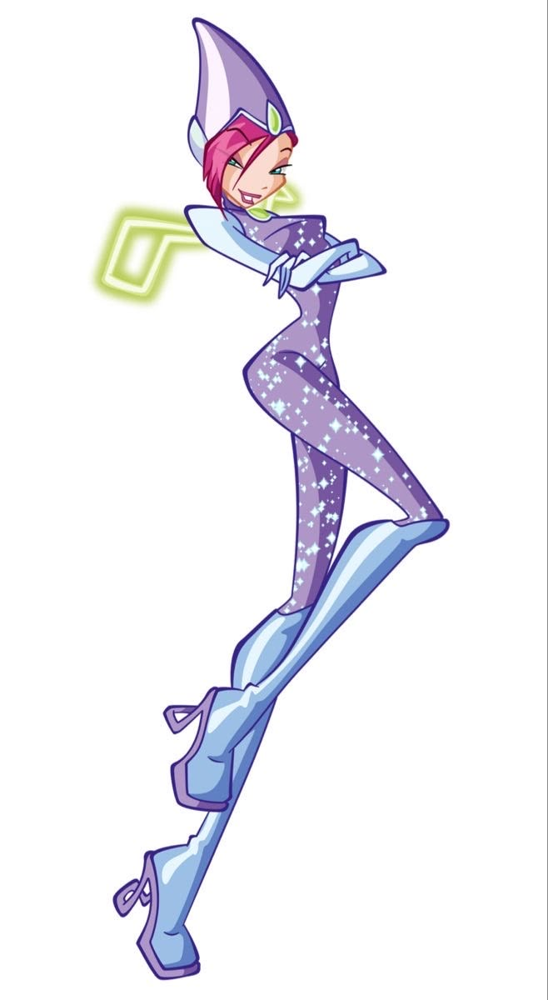
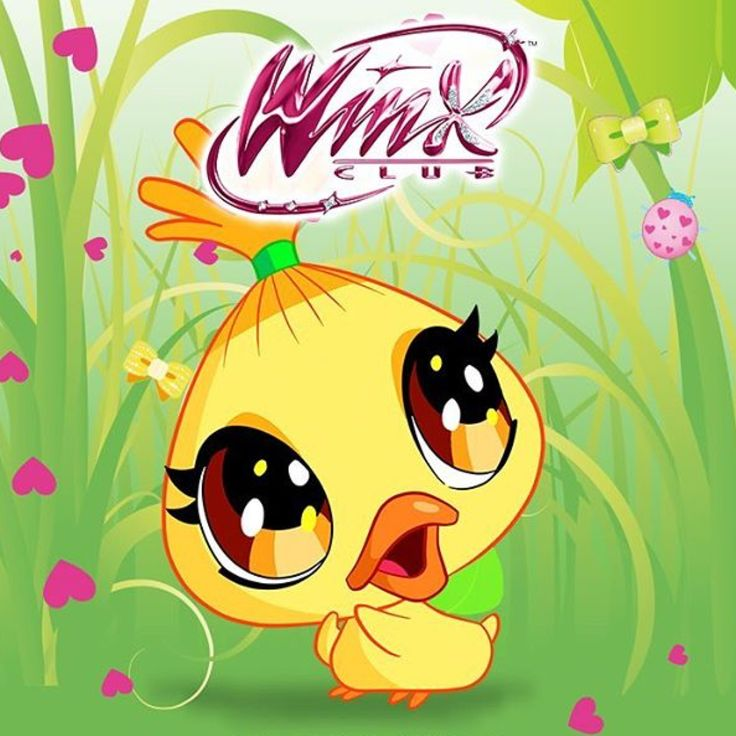

|
 |
 |
Tecna é uma das protagonistas de O Clube das Winx e a Fada da Tecnologia. Ela é conhecida por sua personalidade lógica, inteligente, prática e curiosa. Seus poderes estão relacionados à tecnologia, aos sistemas digitais e à energia tecnológica, que ela utiliza para resolver problemas e enfrentar inimigos.
Tecna nasceu no planeta Zenith, um mundo conhecido por sua tecnologia avançada. Desde pequena, ela demonstrou grande interesse por máquinas, dispositivos e sistemas tecnológicos.
Ela estudava na Escola de Fadas de Alfea quando conheceu Bloom, Stella, Flora e Musa. Com elas, formou o grupo que ficaria conhecido como Clube das Winx.
Tecna frequentemente utiliza sua inteligência e seus conhecimentos tecnológicos para ajudar as amigas a resolver desafios. Sua capacidade de analisar situações e encontrar soluções torna-se importante durante as aventuras das Winx.
Apesar de ser bastante lógica, Tecna também aprende a valorizar os sentimentos e a importância dos vínculos com suas amigas. Ao longo da série, ela demonstra coragem, lealdade e disposição para proteger quem ama.
Na sua primeira transformação, conhecida como Magic Winx, Tecna manifesta os poderes da Tecnologia, utilizando energia tecnológica para criar feitiços e controlar diferentes sistemas mágicos.
Seus poderes permitem que ela crie campos de energia, utilize barreiras de proteção e manipule elementos tecnológicos por meio de sua magia.
• Controle tecnológico: Tecna consegue interagir magicamente com sistemas e dispositivos tecnológicos.
• Campos de energia: pode criar barreiras e campos mágicos para se proteger de ataques.
• Rajadas de energia: utiliza energia tecnológica em ataques mágicos contra seus adversários.
• Análise de sistemas: sua inteligência e seus poderes permitem que ela compreenda e investigue diferentes mecanismos.
• Escudos mágicos: pode criar proteções utilizando energia tecnológica.
• Voo mágico: como fada, Tecna pode voar utilizando suas asas mágicas.
Na transformação inicial, Tecna apresenta cabelos curtos em tom magenta, asas delicadas em tons de verde e uma roupa característica composta por um top e uma saia curta em tons de roxo e verde, além de botas.
Seu visual combina com sua personalidade tecnológica e moderna, representando sua ligação com a ciência, a lógica e os sistemas digitais.

Chicko é o patinho de estimação de Tecna. Ele é um pequeno companheiro que aparece em momentos relacionados à vida das Winx e seus animais de estimação.
Chicko acompanha Tecna em situações divertidas e representa o lado carinhoso da fada, que também valoriza os vínculos com seus companheiros.
Chicko é o animal de estimação de Tecna e não deve ser confundido com os Fairy Animals, os animais mágicos associados às Winx em aventuras posteriores.
• Tecna é a Fada da Tecnologia.
• Ela nasceu no planeta Zenith.
• Seus poderes estão relacionados à tecnologia e à energia tecnológica.
• É conhecida por sua inteligência e personalidade lógica.
• Costuma ajudar as Winx a resolver problemas com sua capacidade de análise.
• Seu animal de estimação é o patinho Chicko.
• É uma das integrantes fundadoras do Clube das Winx.